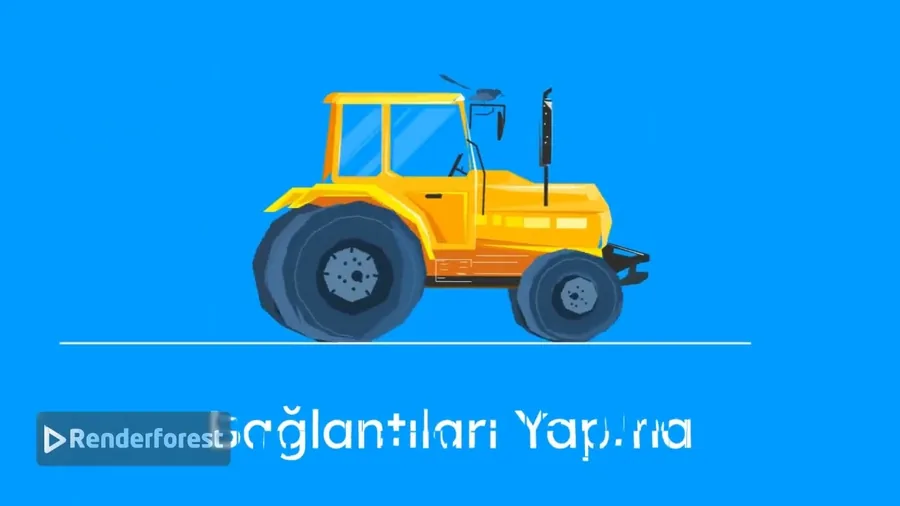

Kurslar
Kuantum Bilgisayarlar, Sıfırdan
Sıfırdan kurulan, dürüst bir giriş. Önce kuantum bilgisayarların "tüm cevapları aynı anda denediği" efsanesini yıkıyoruz; ardından kübit, süperpozisyon, ölçüm, dolanıklık ve girişim kavramlarını adım adım kurarak bu makinelerin gücünün gerçekte nereden geldiğini gösteriyoruz. Sonunda da neyi gerçekten iyi yaptıklarını, neyi yapmadıklarını ve donanımın daha ne kadar yol alması gerektiğini konuşuyoruz.
- 0:00Açılış: efsane
- 0:59Klasik bilgisayarlar neden duvara toslar
- 2:44Kübit ve süperpozisyon
- 4:30Ölçüm ve işin püf noktası
- 6:13Dolanıklık
- 8:01Girişim: asıl motor
- 9:47Kapılar ve devreler
- 11:01Gerçekte ne işe yararlar
- 12:37Gürültü ve bugün neredeyiz
Makine Öğrenmesi
Makine öğrenmesini sıfırdan kuran görsel bir anlatım: bir bilgisayarın kurallar yerine örneklerden öğrenmesi ne demektir ve eğitim döngüsü veriyi nasıl genelleyebilen bir modele dönüştürür. Regresyon, sınıflandırma, gradyan inişi, eğitim ve test ayrımı, aşırı öğrenme ve doğruluk oranının başarısızlığı nasıl gizleyebildiği işleniyor; ardından karar ağaçları ve yapay sinir ağları anlatılıyor, bir proje baştan sona izleniyor ve önyargı, mahremiyet, veri kayması ile insan denetimiyle kapanıyor.
- 0:00Giriş
- 0:30Öğrenmek ne demek?
- 1:50Öğrenme döngüsü
- 3:15Öznitelikler ve etiketler
- 4:30Öğrenmenin üç yolu
- 5:55Regresyon: bir sayıyı tahmin etmek
- 7:25Sınıflandırma: kategori seçmek
- 8:50Kayıp ve gradyan inişi
- 10:20Eğitim, doğrulama, test
- 11:35Eksik ve aşırı öğrenme
- 13:00Başarımı ölçmek
- 14:30Ağaçlar ve ormanlar
- 15:55Yapay sinir ağları
- 17:25Baştan sona bir proje
- 18:40Sınırlar ve sorumluluk
- 19:35Bütün resim
1. dereceden denklemler
Birinci dereceden denklemler konusunun, sınavda sorulduğu biçimiyle işlendiği çözümlü bir ders. Değişkenin ne olduğuyla başlıyor; ardından üç beceriyi sırayla kuruyor: harfin değeri verildiğinde ifadenin değerini bulmak, bir cümleyi cebirsel olarak modellemek ve son olarak bir problemi denkleme dönüştürüp çözmek. Sorular yalnızca cevaplanmıyor, ekranda adım adım çözülüyor.
- 0:00Değişkenler ve birinci dereceden denklemler
- 0:40İfadenin verilen değer için sonucu
- 1:50Alıştırmalar, 1'den 8'e sorular
- 4:48Cümleyi cebirsel olarak modelleme
- 8:04Problemler: yaş, para ve sınav puanı

Arduino ile Başlangıç
Daha önce hiç mikrodenetleyici kullanmamış olanlar için Arduino'ya giriş. Teknolojiyi yalnızca okumak yerine bir şeyler üretmeye başlamanın ilk adımı olarak kurgulanmış. YouTube'da Arduino ile Başlangıç: Bilim ve Teknolojinin Kalbine Yolculuk adıyla yayınlandı.